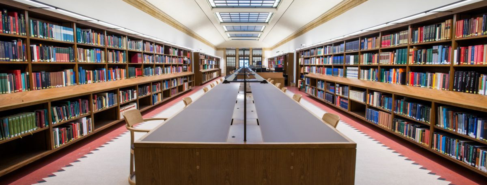

University Central Library

The University of Layyah Library serves as a central hub for academic resources, supporting the educational and research needs of students and faculty. With a rich collection of textbooks, reference materials, research journals, and digital resources, the library fosters an environment of independent learning and intellectual growth.
The library is equipped with modern facilities including high-speed internet access, digital catalogues, reading rooms, and computer stations. It is fully automated and offers an online library system for efficient book search and borrowing services.
Whether you're preparing for an exam, conducting research, or just exploring new ideas, the University Library offers a peaceful and resource-rich environment to help you succeed.